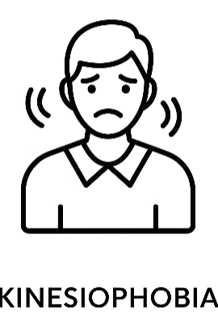
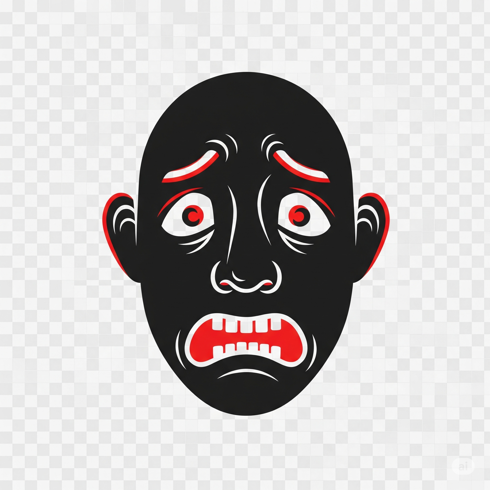

Escolha abaixo qual avaliação deseja responder. Cada questionário foi desenvolvido para uma análise clínica específica.

Avalia o medo relacionado ao movimento e dor física — Escala de Tampa (TSK-17).
Responder →
Identifica padrões negativos de pensamento durante episódios de dor — PCS.
Responder →